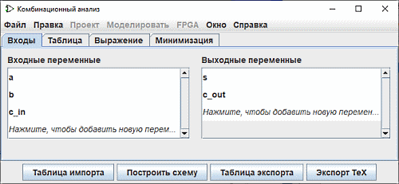
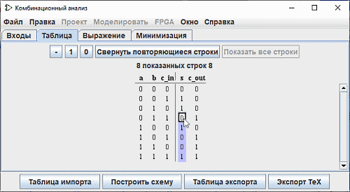

Редактирование таблицы истинности
При открытии окна Комбинационный анализ вы увидите, что его интерфейс состоит из четырех основных вкладок.
В данном разделе справочного руководства подробно рассматривается работа с первыми двумя вкладками: Входы и выходы и Таблица. Описание оставшихся вкладок (Выражение и Минимизация) приведено в следующих частях руководства.
Вкладка «Входы и выходы»

Вкладка Входы и выходы предназначена для просмотра, добавления и удаления входных и выходных переменных, а также для настройки их разрядности (ширины шины данных).
Чтобы добавить новую переменную, щелкните левой кнопкой мыши по строке-заполнителю «Нажмите, чтобы добавить новую переменную» в соответствующем столбце и введите желаемое имя. На иллюстрации выше показан процесс добавления переменной c_out в список выходов. Разрядность переменной можно изменить в правом столбце списка с помощью мыши. Для завершения ввода имени нажмите клавишу Enter или Tab.
Для удаления переменной выделите её в списке (используя мышь или клавиши Стрелка вверх / Стрелка вниз) и нажмите клавишу Delete (или Backspace).
Если вам необходимо изменить порядок следования переменных, выберите нужную строку и воспользуйтесь сочетанием клавиш Ctrl + Стрелка вверх или Ctrl + Стрелка вниз для перемещения элемента по списку.
Примечание: Любые изменения в составе или порядке переменных мгновенно отражаются на структуре таблицы истинности.
Вкладка «Таблица»
Главным и единственным рабочим элементом на вкладке Таблица является текущая таблица истинности, представленная в классическом математическом виде: входные переменные образуют столбцы в левой части, а выходные — в правой.

Пользователь имеет возможность вручную задавать логические уровни в столбцах выходов. Для этого выделите требуемую ячейку и введите с клавиатуры 0, 1 или - (символ дефиса обозначает состояние «безразлично» / don't care). Альтернативный способ — использовать соответствующие кнопки 0, 1, - на панели инструментов непосредственно над таблицей. После ввода значения курсор автоматически сместится на одну строку вниз для ускорения процесса заполнения. Навигация по ячейкам таблицы осуществляется клавишами со стрелками.
Аналогичным образом можно редактировать состояния и во входных столбцах (заменяя значения на 0, 1 или -). Использование неопределённых состояний («безразлично») предоставляет алгоритмам минимизации дополнительную гибкость, позволяя синтезировать более лаконичные логические выражения и схемы.
Функциональные кнопки Свернуть повторяющиеся строки и Показать все строки позволяют временно сжать таблицу для удобства визуального анализа или развернуть её обратно в полное каноническое представление.
Инструмент поддерживает работу с системным буфером обмена. Содержимое таблицы истинности можно легко скопировать и вставить в сторонние приложения, поддерживающие текст с разделителями-табуляциями (например, в табличные процессоры MS Excel, LibreOffice Calc или текстовые редакторы).
Ошибки анализа
Если таблица истинности была автоматически сгенерирована на основе существующей схемы, в столбцах выходов могут появиться ячейки с красным квадратом и символом «E» (Error). Этот маркер сигнализирует о критических ошибках при расчёте логики для конкретной входной комбинации. Наиболее частые причины: схема генерирует бесконечные автоколебания, возникает конфликт логических уровней (короткое замыкание), либо на выходе формируется неинициализированное или ошибочное состояние (которое на холсте Logisim обычно подсвечивается красным цветом).
Экспорт и Импорт таблицы
Кнопки Импортировать таблицу и Экспортировать таблицу на панели инструментов позволяют сохранить текущую конфигурацию таблицы истинности в текстовый файл и при необходимости загрузить её обратно в проект. Подробная спецификация формата файла приведена в разделе Экспорт / Импорт таблицы.